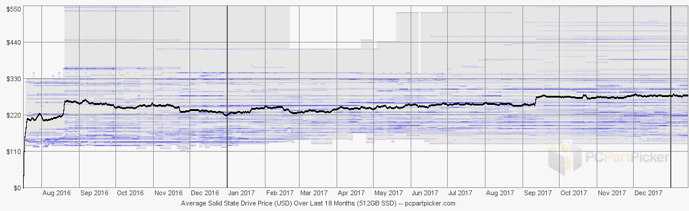

To start, SSD stands for soild state drive. The SSD is the newest and fastest standard consumer storage drive. When you get to a basic level an SSD is just a circuit with some flash chips, controller chip, and a connector so it can talk to the motherboard. SSD's, unlike hard disk drives (HDD), have no spinning platter or actuator arm. Thats why, its "solid".
← This is a SSD the black rectangles are the flash chips that store the data.
Right now in 2018 the market is worth $26.47 billion and experts are saying that by 2023 it will nearly triple as it will go up to $60.22 billion this massive increase is due to nearly all data centers and servers using solid state drives instead of their mechanical counterparts. The major players in the SSD market now are Samsung, Intel, Western Digital, Micron, and Toshiba. The market for PCIe SSDs is also expected to grow over the years as more and more users demand super-fast speed, low-latency and high performance.
The thicc black lines represent the average price of a 500GB SSD, the thin blue lines show the price of each model. More info.
Source: PC Part Picker. Pricing data includes promos, coupons, rebates, and shipping costs (when available)
Top cover: Keeps the SSD’s PCB and chips protected
Interface Connector: The connector it uses to communicate with the motherboard and the SATA controller
Cache chip: Stores where each piece of data is on the SSD and tells the controller chip where it is
Controller chip: This the the main processing unit for the SSD it handles the managing of data, moving it around to create space for new data, and erasing data
NAND memory chips: The silicon chip that the data is stored in
Logic Board: The printed circuit board (PCB) that all the chips and connectors are soldered to
Bottom cover: Protects the bottom of the PCB and provides screw holes that are required to mount them